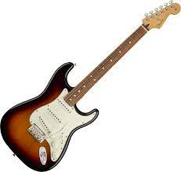

Gibson Brands es una de las empresas más grandes de fabricación de guitarras. Fue fundada en 1894 por Orville Gibson en la ciudad de Kalamazoo.

Gibson Brands es una de las empresas más grandes de fabricación de guitarras. Fue fundada en 1894 por Orville Gibson en la ciudad de Kalamazoo.
La Fender Stratocaster, popularmente conocida como Strat (inglés) o Strato en español, es un modelo de guitarra eléctrica diseñado desde 1952 hasta 1954 por Leo Fender, Bill Carson, George Fullerton, y Freddie Tavares. Fender Musical Instruments Corporation la ha estado fabricando desde 1954 hasta la actualidad.

The Epiphone Company es una compañía fabricante de instrumentos
musicales. A finales de los años 50, era el principal rival de Gibson en
guitarras tipo archtop, pero la compañía crecería poco después de la II
Guerra mundial y pronto sería absorbida por Gibson. Además de guitarras
eléctricas Epiphone fabrica bajos, banjos, otros instrumentos de cuerdas
y equipos de amplificación, tanto de guitarra como de bajo.